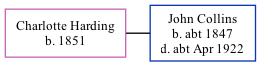

Charlotte Maria Collins (née Harding) 1851 -
[ Home ] | [ Calendar ] | [ Surnames Index ] | [ Family History ]Charlotte Harding, the wife of John Elgar Collins (the first cousin three-times-removed on the father's side of Nigel Horne), was born in Buckland, Kent, England in 18511,2,3. She married John (a shepherd) at St George's Church, Ramsgate, Kent, England on Oct 31, 18744.
Throughout her life, she lived on Sandwich Road, Minster, Thanet, Kent in 18911 and on Apr 5, 18911.
Citations
- 1891 England, Wales & Scotland Census - Findmypast (was age 38 and the wife of the head of the household)
- England Marriages 1538-1973 - Findmypast
- Kent, Canterbury Archdeaconry Marriages - Findmypast
- Kent, Canterbury Archdeaconry marriages 1538-1928 - Findmypast
Media
1891 England, Wales & Scotland Census - GBC/1891/0005853867
Kent, Canterbury Archdeaconry marriages - GBPRS/CANT/M/97006479/2
England Marriages 1538-1973 - R_848240350/2
England & Wales marriages 1837-2005 - BMD/M/1874/4/AZ/000139/323
Family Tree
Generated by Ged2Site. Last updated on Jul 20, 2025